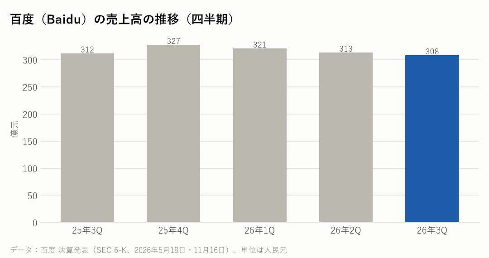
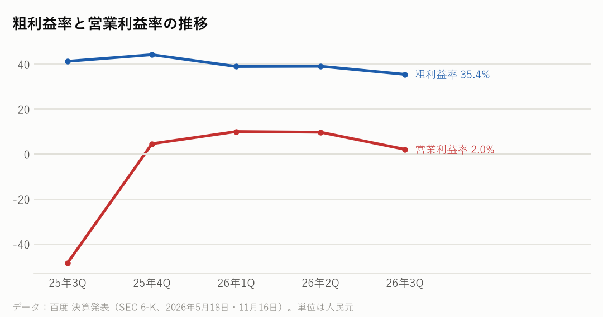
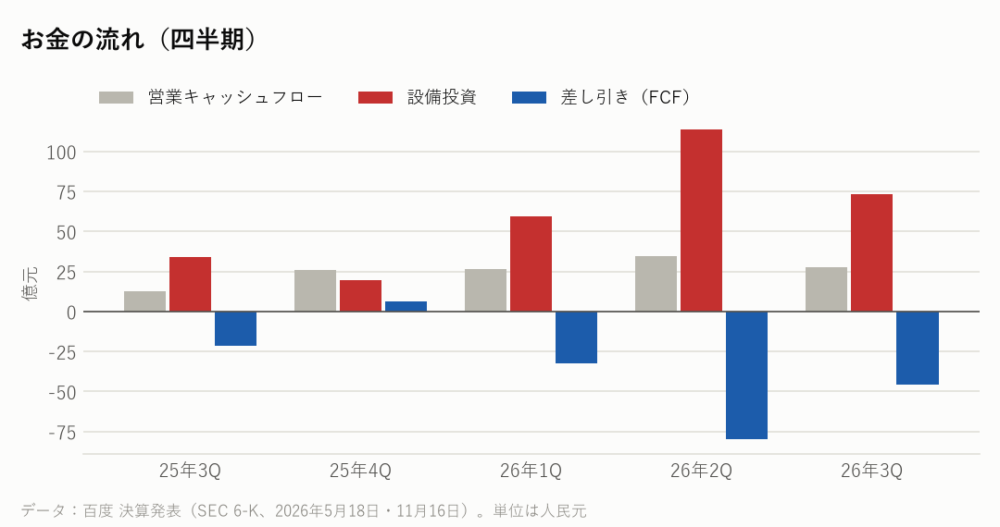

BIDU｜2026年7〜9月期の決算｜決算発表 2026年11月16日（米国時間、取引開始前）
百度（Baidu）の決算：AIクラウドはほぼ2倍なのに、なぜ売上は減った？――広告の2割減と、検索の主役交代
中国の検索大手の百度（Baidu）の7〜9月期は、売上が前年同期比1%減の308億元で、6四半期続けての減収になった。広告が22%減った一方、GPUの貸し出しなどのAIクラウド基盤は94%増の82億元と、ほぼ2倍になった。営業利益は6.3億元（営業利益率2%）にとどまる。中国のAIクラウドの市場では、シェア3位（2025年、Omdia）。
主な数字（2026年7〜9月期）
| 今回 | 前年同期 | 前年比 | |
|---|---|---|---|
| 売上高 | 308億元 | 312億元 | -1.2% |
| 営業利益 | 6.3億元 | -151億元 | 黒字に転換 |
| 営業利益率 | 2.0% | -48.4% | |
| 純利益 | 14億元 | -112億元 | 黒字に転換 |
7〜9月期の事業別の売上
| 事業 | 売上 | 前年同期比 |
|---|---|---|
| AIクラウド基盤 | 82億元 | +94.0% |
| AIアプリ | 26億元（前年並み） | ― |
| オンライン広告（全体） | 119億元 | -22.0% |
| うちAIネイティブ広告 | 24億元 | -15.0% |
| iQIYI（動画配信） | 60億元 | -10.0% |

会社の見通し
| 数字の見通し | 出していない |
|---|---|
| AIクラウド | 強い伸びが続く |
| 広告 | 当面は弱い |
| 利益 | 投資で当面は圧迫 |
| 配当 | 年内に初の配当 |
- 会社は、売上や利益の数字の見通しを出していない。
- AIクラウドは今後も強い伸びが続き、広告の減少を少しずつ埋めていく、と説明している。広告は当面弱く、利益もAIへの投資で圧迫が続く。
- 初めての配当を年内に出す予定（取締役会の承認が条件）。今年の自社株買いは3.73億ドル。
もうけの力

お金の状況

検索とAIクラウドの同業（Alphabet）と比べると
期間はどちらも2026年7〜9月。利益率は営業利益率。各社の決算発表から。中国の同業の騰訊（Tencent、11/18）と阿里巴巴（Alibaba、11/19）は、まだ決算を発表していません。
| 会社 | 売上高 | 前年比 | 利益率 |
|---|---|---|---|
| 百度 | 308億元 | −1% | 2% |
| AIクラウド | 82億元 | +94% | — |
| Alphabet | 1,276億ドル | +25% | 32% |
| Google Cloud | 307億ドル | +103% | — |
利益率は営業利益率。「AIクラウド」は百度のAIクラウド基盤、「Google Cloud」はAlphabetのクラウド部門。通貨が違う（百度は人民元、Alphabetは米ドル）ため、金額の大きさは直接比べられない。事業の中身も違う：百度の売上には動画配信のiQIYI（60億元）が入り、Alphabetの売上にはYouTubeなどが入る。百度の「AIクラウド基盤」はGPUの貸し出し・自社チップ・AIモデルの提供などで、Google Cloudとは範囲が違う。 オンライン広告（全体）には、AIネイティブ広告が含まれる。
NasdaqWhy の視点：データから読み取れる注目点
決算資料と各社の公式データを並べて読み取れることです。将来を予想するものではありません。
- 【なぜ売上が減ったか】広告が119億元（−22%）、動画配信のiQIYIが60億元（−10%）と減った。AIクラウド基盤は82億元（+94%）と大きく伸びたが、全体の減少を埋めきれなかった。ただ、iQIYIを除いた百度一般事業（250億元）は+1%と、増収に戻っている。
- 【なぜ広告が減り続けるのか】中国の利用者が「検索する場所」を変えている。旅行や暮らしの情報は小紅書（RED）、商品は抖音（Douyin、中国版TikTok）、ニュースはWeChatで調べる。百度アプリの月間利用者は、1年前の7億3,500万人から2026年6月には6億4,400万人に減った。一方、同じ中国でも騰訊（Tencent）の広告は4〜6月期に+22%と伸びており、中国の景気だけが理由ではない。
- 【なぜ会社は広告を後回しにするのか】AIが答えを直接出す検索では、広告のクリックが減る。百度は「AI検索では広告より使いやすさを優先する」と説明した。格付け会社フィッチは8月に百度を格下げし、「構造的な衰退」と表現している。
- 【なぜAIクラウドは伸びたか】AIを動かす計算機（GPU）を貸すGPUクラウドが+191%（前の四半期比でも+43%）。AI開発の基盤「千帆」で外部の企業が使ったトークン（AIが処理した文字の量）は約12倍になった。契約が長くなり、前払いも増えている。会社は、AIクラウドの利益と利益率も改善したと説明している。
- 【なぜ利益がこんなに小さいか】広告はもともと利益率がとても高い商売で、AIクラウドは設備が重い。7〜9月期の設備投資は73億元（前年同期は34億元）で、お金の流れ（フリーキャッシュフロー）はマイナス46億元だった。売上の中身が入れ替わる途中で、利益が薄くなっている。なお、前年同期の営業赤字（151億元）は、サーバーなどの資産の減損（一時的な損失）によるもので、今回「黒字に転換」に見えるのはそのため。
- 【業界での立ち位置】中国のAIクラウドの市場で百度は3位（2025年、シェア9.4%、Omdia）。1位は阿里巴巴（Alibaba）のクラウド（38.1%）、2位はByteDanceの火山エンジン（Volcano Engine）（20.4%）。AIアプリの利用者数（2026年9月、QuestMobile）では、上位3つ（ByteDanceの豆包（Doubao）、阿里巴巴（Alibaba）の千問（Qwen）、DeepSeek）に入っていない。
- 自前のAIチップ「崑崙芯」：P800を販売中で、推論向けのM100は2026年末までに量産の見込み。崑崙芯は香港での上場を準備しており、評価額500億ドルを目指すと報じられた（百度の持ち分は57.67%）。数字は報道によるもので、確定ではない。
- 自動運転タクシーのApollo Goは、10月時点で世界30都市。7〜9月に約3,400万kmを無人で走った。ドバイでは車を倍に増やした。
次に確認したい決算・予定
- 騰訊（Tencent、11/18）と阿里巴巴（Alibaba、11/19）の決算：中国のクラウドがどれだけ伸びたか。百度の+94%が業界の平均より強いのかが分かる。
- 百度の初めての配当（年内の予定）：金額の大きさ。
- 崑崙芯の上場の時期と、M100の量産。百度の次の決算（2027年2月ごろの見込み）では、広告の減少が止まるか。
関連リンク
出典：百度 2026年7〜9月期の決算発表（2026年11月16日、SEC 6-K）・1〜3月期の決算発表（2026年5月18日、6-K）・決算説明会（Investing.com の書き起こし）。同業は Alphabet 2026年7〜9月期の決算発表（10月28日）。市場シェアは Omdia（36Kr の報道）、AIアプリの利用者数は QuestMobile（2026年9月）、騰訊（Tencent）の広告は同社の4〜6月期の決算、百度アプリの利用者数と格付けは報道（Vocal、Fitch）
📝 note でも読めます（図つき・まとめ）：note.com/nasdaqwhy